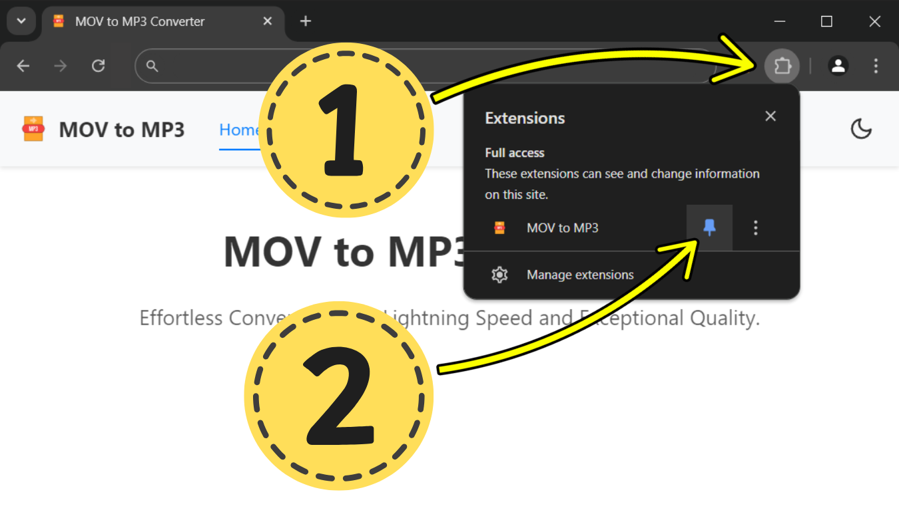

MOV to MP3 converter
Effortless Conversion with Lightning Speed and Exceptional Quality.
⚡ Now you have a great way to convert MOV to MP3
1. Pin the extension for quick access to the MOV to MP3 converter.

2. Simply click on the extension icon to open the converter.
Drag and drop your video files onto the designated area or click to browse your files
Help Center
1. Pin the extension for quick access to the MOV to MP3 converter.
2. Simply click on the extension icon to open the converter.
Drag and drop your video files onto the designated area or click to browse your files.
- Open the MOV to MP3 converter.
- Upload your MOV files either by dragging and dropping them into the converter. Alternatively, you can browse your computer by clicking on the cloud icon in the converter.
- Wait for the conversion process to finish.
- Once the conversion is complete, click on the Download button.
- Your converted files will be saved in your computer's Download folder. Click on the "Open downloads folder" button if prompted.
- If you've converted multiple files, they will be saved in a zip archive named "converted-mov-mp3.zip".
Contact Us
E-mail: byankojef@gmail.com